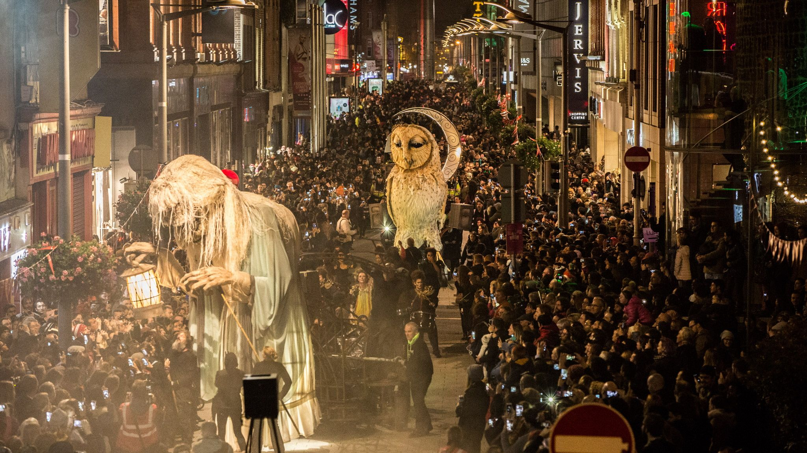

St Patrick's Day, celebrated annually on March 17th, is Ireland's most widely recognized cultural and national holiday, honoring St Patrick, the patron saint credited with bringing Christianity to Ireland in the 5th century. Over centuries, the holiday has grown from a religious feast day into a global celebration of Irish identity, heritage, and culture. St Patrick himself was not Irish by birth—he was likely born in Roman Britain and brought to Ireland as a teenager after being captured by raiders. After escaping and returning home, he later felt called to return to Ireland as a missionary. Legends associated with St Patrick include driving the snakes out of Ireland, using the shamrock to explain the Holy Trinity, and converting large numbers of people. Although some details are folkloric, Patrick’s historical influence on Irish Christianity is well-established.
Irish Holidays
St Patricks Day

Halloween
Halloween, one of the most widely celebrated holidays around the world today, has its origins in ancient Ireland, where it began as the Irish festival of Samhain celebrated more than 2,000 years ago. It marked the end of the harvest season and the beginning of winter—a time of darkness, cold, and uncertainty. The Irish believed that on the night of Samhain, the boundary between the living world and the spirit world weakened, allowing spirits, both good and harmful, to cross over. These spirits were thought to wander the earth, seeking food, comfort, or mischief. To protect themselves, the Irish lit large bonfires on hilltops, which were believed to ward off evil spirits and guide friendly ancestors home. People often wore animal skins, masks, or disguises to blend in with wandering spirits and avoid being harmed or recognized. This ancient practice is considered the earliest form of the costume tradition that survives today.
